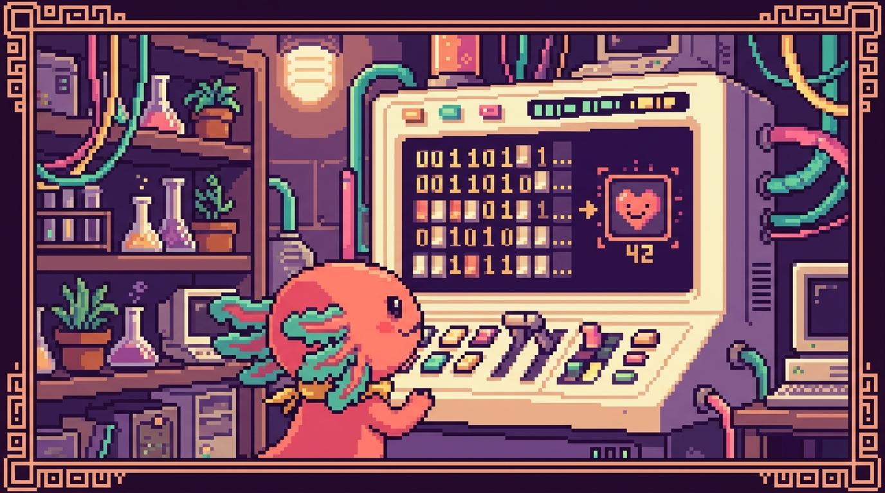

Capítulo 06 — El sistema binario y hexadecimal

En este capítulo vamos a mirar cómo cuenta una computadora por dentro. Y no, no usa los diez dedos como tú y yo: por dentro solo distingue dos estados, encendido y apagado. Con eso tan simple arma todo: los números, las letras de este texto, las fotos de tu galería, los colores de tu sitio web. Cuando entiendes esto, símbolos raros como
#1B6B6Bque aparecen en tu CSS dejan de darte miedo, y te queda una intuición que vas a aprovechar el resto de tu vida programando. Bit, nuestro ajolote pixelado, viene contigo en el viaje; al fin y al cabo, él también está hecho de bits.
1. ¿Por qué una computadora solo cuenta con 0 y 1?
Piensa en el interruptor de luz de tu pared. Tiene dos posiciones y ya: encendido o apagado. No existe un "medio encendido" estable que se pueda medir bien. Una computadora es, en el fondo, millones (¡miles de millones!) de interruptores diminutos, y cada uno solo sabe estar en una de esas dos posiciones.
Como solo hay dos estados, los representamos con dos símbolos: 0 para apagado y 1 para encendido. Eso es absolutamente todo. No hay truco escondido: la computadora es una montaña enorme de interruptores, y programar es, si lo piensas, decidir cuáles se encienden y cuáles se apagan.
🟦 ¿Qué significa? — Bit
Un bit es la pieza de información más pequeña que maneja una computadora: un único valor que solo puede ser 0 o 1 (apagado o encendido). El nombre sale del inglés binary digit, "dígito binario". Es el ladrillo mínimo con el que se levanta todo lo demás. Un bit solo, por sí mismo, dice bastante poco; la cosa se pone interesante cuando juntas muchos.
🟦 ¿Qué significa? — Sistema binario
El sistema binario es contar usando solo dos símbolos: 0 y 1. Por eso decimos que es "base 2". Nosotros los humanos contamos en decimal ("base 10"), con diez símbolos: 0, 1, 2, 3, 4, 5, 6, 7, 8 y 9, seguramente porque tenemos diez dedos. La computadora cuenta en binario porque sus interruptores solo tienen dos posiciones.
💡 Tip — No te asustes con la palabra "base"
"Base 10" no quiere decir nada raro: solo significa "usamos 10 símbolos distintos". "Base 2", "usamos 2 símbolos distintos". La forma de contar es la misma en los dos casos; lo único que cambia es cuántos símbolos tenemos antes de quedarnos sin ellos y vernos obligados a "llevar uno". Eso lo vemos en un momento.
2. Cómo contamos los humanos (para entender cómo cuenta la máquina)
Antes de meternos en el binario, fíjate en algo que haces sin pensar. Cuando cuentas en decimal y llegas al 9, te quedas sin símbolos. ¿Y qué haces entonces? Reinicias esa primera posición a 0 y pones un 1 a la izquierda: del 9 saltas al 10. Vuelves a llenar hasta el 19 y entonces das el salto al 20. Así hasta el 99, y luego el 100.
Lo importante es esto: cada posición vale diez veces más que la de su derecha. Tomemos el número 347:
- el 7 está en las unidades (vale 7 × 1 = 7),
- el 4 está en las decenas (vale 4 × 10 = 40),
- el 3 está en las centenas (vale 3 × 100 = 300).
Y al sumar: 300 + 40 + 7 = 347. Lo hacías de niño sin pararte a pensar en la mecánica que había debajo.
El binario funciona igualito, con una sola diferencia: como solo hay dos símbolos, cada posición vale el doble que la de su derecha, en lugar de diez veces más.
3. Contar en binario, paso a paso
En binario solo tenemos 0 y 1. Empecemos a contar desde cero y mira lo que pasa cuando nos quedamos sin símbolos (cosa que ocurre enseguida, porque solo hay dos):
| Número decimal | En binario |
|---|---|
| 0 | 0 |
| 1 | 1 |
| 2 | 10 |
| 3 | 11 |
| 4 | 100 |
| 5 | 101 |
| 6 | 110 |
| 7 | 111 |
| 8 | 1000 |
¿Ves el patrón? Cuando llegamos al 1 y queremos sumar uno más, no hay ningún "2" al que recurrir, así que reiniciamos a 0 y llevamos uno a la izquierda: de 1 pasamos a 10 (que se lee "uno-cero", no "diez", y vale 2 en decimal). Es justo lo mismo que hacíamos al pasar de 9 a 10 en decimal, solo que aquí ocurre muchísimo más a menudo.
💡 Tip — Léelo dígito por dígito
El binario
101no se lee "ciento uno". Se lee "uno, cero, uno". Decir "ciento uno" es mezclar decimal con binario y solo consigues hacerte un lío. Pronuncia cada cifra por separado.
El truco de las posiciones (potencias de 2)
Cada posición en binario tiene un valor fijo. Si empiezas por la derecha, van así: 1, 2, 4, 8, 16, 32, 64, 128... cada una es el doble de la anterior. Para saber cuánto vale un número binario, sumas los valores de las posiciones donde haya un 1.
Veámoslo con 1101:
Posición: 8 4 2 1
Bits: 1 1 0 1
Hay un 1 en la posición del 8, en la del 4 y en la del 1 (la del 2 tiene un 0, así que esa no suma). Sumamos: 8 + 4 + 0 + 1 = 13. Y ya está: 1101 en binario es 13 en decimal.
🟦 ¿Qué significa? — Byte
Un byte (se pronuncia "bait") es un grupo de 8 bits. Con 8 bits puedes formar 256 combinaciones distintas (desde
00000000hasta11111111, o sea del 0 al 255). El byte es la unidad práctica con la que se mide casi todo en computación: un carácter de texto, el tamaño de un archivo (kilobytes, megabytes, gigabytes) y, como vas a ver, cada componente de color. Cuando tu discopolypaw-nasmarca "238 GB", está usando esta misma escala: la G es de giga y la B de bytes.💡 Tip — De ahí salen los "256" y "255" que ves por todas partes
Cuando te encuentres con números como 255, 256, 128, 1024 o 65535 en programación, casi siempre vienen de potencias de 2. No son caprichosos: marcan "hasta dónde llega" cierta cantidad de bits. 8 bits llegan a 255; 16 bits llegan a 65535. El día que reconozcas estos números de un vistazo, es señal de que ya empiezas a pensar como la máquina.
4. Cómo se guarda un número, una letra y un texto
Ya sabemos que un grupo de bits sirve para representar un número. ¿Pero cómo guarda la computadora una letra como la A, si lo único que conoce son ceros y unos?
La respuesta es un acuerdo: una tabla que dice "tal número representa tal carácter". El acuerdo más famoso de la historia se llama ASCII.
🟦 ¿Qué significa? — ASCII
ASCII (se lee "aski") es una tabla nacida en los años 60 que le pone un número a cada carácter del inglés. Por ejemplo: la A mayúscula es el 65, la B es el 66, la a minúscula es el 97, el espacio es el 32 y el dígito 0 (como carácter de texto) es el 48. Como todos esos números caben en un byte, cada carácter ocupa exactamente un byte. Gracias a ASCII, computadoras distintas podían entenderse al intercambiar texto.
Así que la palabra Bit se guarda como tres números (66, 105, 116), y cada uno como un patrón de 8 bits encendidos y apagados. La pantalla, cuando lee el 66, sabe que toca dibujar una "B".
El problema de ASCII es que solo pensó en el inglés. No tiene ñ, ni á, ni emojis, ni nada del chino o del árabe. Por eso, más adelante, hubo que inventar algo más grande.
🟦 ¿Qué significa? — Unicode (y UTF-8)
Unicode es una tabla gigante y moderna que le da un número único a cada carácter de todos los idiomas del mundo, más símbolos y emojis (¡el ajolote 🦎 incluido!). UTF-8 es la manera más común de guardar esos caracteres en bytes, y tiene una ventaja enorme: es compatible con ASCII para las letras básicas. Gracias a esto, tu texto en español, con sus "ñ" y sus tildes, se ve igual en cualquier dispositivo del planeta.
🔎 En tu código
En tu proyecto tunal-digital, el archivo
sitio-web/index.htmlseguramente arranca con una línea parecida a<meta charset="UTF-8">. Esa etiqueta le avisa al navegador: "este texto está guardado en UTF-8, interprétalo así". Por ella, palabras como "diseño" o "información" salen bien y no convertidas en símbolos rotos (dise�o). Si algún día ves caracteres extraños en una web, casi siempre es un problema de codificación de caracteres.⚠️ Cuidado — "Número" y "carácter" no son lo mismo
El número 5 (la cantidad) y el carácter "5" (el símbolo que se imprime en pantalla) se guardan de forma distinta. La cantidad cinco es el binario
101; el carácter "5" es, en ASCII, el número 53. Por eso en programación a veces toca "convertir" un texto en número antes de hacer cuentas. En tu app RachaSimple (React + TypeScript), si lees"7"de un campo de texto y quieres sumarlo, primero tienes que pasarlo al número 7; si no,"7" + 1podría darte"71"en lugar de8. Lo verás con calma más adelante, cuando lleguemos a los tipos de datos.
5. Los colores también son números
Aquí es donde todo se conecta con lo que ya tocas en tus proyectos. Las pantallas arman cada color mezclando tres luces: Rojo, Verde y Azul (en inglés RGB: Red, Green, Blue). Imagínalo como tener tres focos de colores y poder subirles o bajarles la intensidad a cada uno.
🟦 ¿Qué significa? — RGB
RGB son las iniciales en inglés de Red, Green, Blue (rojo, verde, azul). Es el modelo que usan las pantallas para formar cualquier color combinando esas tres luces. A cada una le das una intensidad de 0 a 255 (un byte). Por eso, en el fondo, un color son tres números. Es un modelo "aditivo": arrancas del negro (todo apagado) y vas sumando luz hasta llegar al blanco (todo a tope).
¿Cuánta intensidad puede tener cada foco? Un valor de 0 a 255. ¿Y por qué precisamente 255? Porque cada componente usa un byte (8 bits), y ya vimos que un byte llega justo hasta 255. Todo encaja:
- Rojo a tope, verde y azul apagados → rojo puro: (255, 0, 0).
- Los tres apagados → negro: (0, 0, 0).
- Los tres a tope → blanco: (255, 255, 255).
Combinando las tres intensidades sacas alrededor de 16,7 millones de colores. Resumiendo: un color son solo tres números, y cada número es solo un byte.
6. El sistema hexadecimal: escribir bytes de forma corta
Escribir colores como (27, 107, 107) funciona, claro, pero los programadores querían algo más compacto y que encajara al milímetro con los bytes. Ahí aparece el hexadecimal.
🟦 ¿Qué significa? — Sistema hexadecimal (hex)
El sistema hexadecimal es contar en "base 16": dieciséis símbolos. Como solo tenemos diez dígitos (0–9), se piden prestadas seis letras para los que faltan: A=10, B=11, C=12, D=13, E=14, F=15. Entonces, después del 9 viene A, luego B... hasta llegar a la F, y ahí se "lleva uno" (a la F le sigue 10, que en hex vale dieciséis). Sirve para escribir valores de bytes de forma corta y ordenada.
¿Por qué hexadecimal y no cualquier otra base? Por una coincidencia preciosa: dos dígitos hexadecimales representan exactamente un byte (un número de 0 a 255). Ni uno más, ni uno menos. Un dígito hex equivale a 4 bits, así que dos dígitos suman 8 bits = 1 byte. Por eso encaja con los colores como anillo al dedo.
Mira la correspondencia:
| Decimal | Hex |
|---|---|
| 0 | 0 |
| 9 | 9 |
| 10 | A |
| 15 | F |
| 16 | 10 |
| 255 | FF |
El valor más alto de un byte, 255, se escribe FF en hex (la F vale 15: 15×16 + 15 = 255). Y el más bajo, 0, es 00. Compacto y predecible.
💡 Tip — Cómo leer un par hexadecimal
Para pasar un par hex a decimal: el primer dígito vale "su valor × 16", y a eso le sumas el segundo. Por ejemplo
1B: la 1 vale 1×16 = 16; la B vale 11. En total: 16 + 11 = 27. No hace falta que lo calcules de cabeza cada vez (las herramientas lo hacen por ti), pero entender el mecanismo te da intuición.
7. Por qué los colores CSS usan hex: el caso de tunal-digital
🟦 ¿Qué significa? — CSS
CSS (del inglés Cascading Style Sheets, "hojas de estilo en cascada") es el lenguaje con el que se le da aspecto a una página web: colores, tamaños, tipos de letra, espacios y posiciones. Si el HTML es el "esqueleto" del contenido, el CSS es "la ropa y el maquillaje". Los archivos
.css, comostyles.cssen tunal-digital, guardan estas reglas de estilo, y es justo ahí donde escribes los colores en hexadecimal.
Ahora sí, vamos con ese #1B6B6B que aparece en tu styles.css. Un color en CSS escrito en hexadecimal tiene esta pinta:
#RRGGBB
O sea: la almohadilla # seguida de tres pares de dígitos hex. El primer par es el Rojo, el segundo el Verde y el tercero el Azul. Cada par es un byte (de 0 a 255). Vamos a descifrar el color de tu marca:
🔎 En tu código
En tunal-digital, dentro de
sitio-web/styles.css, usas el color#1B6B6B. Traduzcámoslo: - 1B (rojo) = 1×16 + 11 = 27 - 6B (verde) = 6×16 + 11 = 107 - 6B (azul) = 6×16 + 11 = 107Es decir, en RGB queda (27, 107, 107): poco rojo y cantidades iguales y medias de verde y azul. Eso te da un verde azulado oscuro (un tono "teal"), perfecto para una identidad sobria y profesional. Ya no es un símbolo misterioso: sabes exactamente qué luces le está pidiendo a la pantalla.
/* Un fragmento como el de tu styles.css */
:root {
--color-marca: #1B6B6B; /* rojo 27, verde 107, azul 107 → teal oscuro */
--color-fondo: #FFFFFF; /* 255,255,255 → blanco puro */
--color-texto: #000000; /* 0,0,0 → negro */
}
💡 Tip — El atajo de 3 dígitos
A veces verás colores de solo 3 dígitos, como
#FFFo#1B6. Es una abreviatura: CSS duplica cada dígito por su cuenta.#FFFequivale a#FFFFFF(blanco) y#F00a#FF0000(rojo puro). Resulta útil cuando los pares tienen dígitos repetidos.⚠️ Cuidado — Hex no es solo para colores
El hexadecimal asoma en muchos otros sitios: direcciones de memoria, identificadores, códigos de error, claves. En tu app PolyPaw (Python + Flet), si guardas o muestras ciertos identificadores, puedes toparte con cadenas hex largas. Y un emoji como 🦎 tiene un "punto de código" Unicode que suele escribirse en hex (
U+1F98E). Reconocer "esto es hexadecimal" ya es media batalla ganada.
8. ¿Y para qué me sirve saber todo esto en la práctica?
A lo mejor piensas: "si las herramientas convierten por mí, ¿para qué memorizar tablas?". Y tienes parte de razón: no hace falta que te memorices conversiones. Pero entender el concepto te da algunos superpoderes para el día a día:
- Eliges colores con criterio. Sabes que
#000000es negro y#FFFFFFblanco, que subir los números aclara el color y bajarlos lo oscurece. En tunal-digital puedes afinar un tono a mano sin ir a ciegas. - Entiendes los tamaños. Cuando tu
polypaw-nasdice "8 GB de RAM" o "954 GB de disco", sabes que la B es de bytes y que todo se mide en potencias de 2. - Diagnosticas texto roto. Si una página te muestra
ñdonde debería haber unañ, ya sospechas de un problema de codificación (UTF-8 mal configurado), como el<meta charset>de tu HTML. - Lees mensajes técnicos sin entrar en pánico. Códigos de error, hashes, tokens... muchos vienen en hex, y dejan de parecerte jeroglíficos.
🔎 En tu código
En Faro (carpeta
Organizer, Next.js + TypeScript), cuando tu backend ensrc/app/apimaneje tokens, identificadores de Supabase o respuestas de la API de OpenAI, te vas a encontrar cadenas largas de letras y números. Buena parte usa hexadecimal o codificaciones derivadas de bytes. No tienes que descifrarlas a mano, pero saber que "esto representa bytes en hex" te evita confundir un identificador con texto legible.💡 Tip — Una calculadora siempre a mano
En tu computadora, la app Calculadora suele traer un "modo programador" que convierte entre decimal, binario y hexadecimal con un clic. Es ideal para comprobar tus conversiones mientras aprendes. Bit la usa todo el tiempo; no es hacer trampa, es ser práctico.
9. Resumen visual de las tres "capas"
Para que se te quede grabado, así se conecta todo, de lo más pequeño a lo más cercano a ti:
BITS (0 y 1) → agrupados en BYTES (8 bits, hasta 255)
↓
Un byte puede ser:
• un número (101 binario = 5)
• una letra (65 = 'A' en ASCII / Unicode)
• una intensidad de color (255 = foco al máximo)
↓
HEXADECIMAL escribe cada byte en 2 dígitos cortos (FF = 255)
↓
#1B6B6B = tres bytes = rojo 27, verde 107, azul 107 = el teal de tunal-digital
Todo lo que ves en una pantalla —este texto, los botones de RachaSimple, los colores de tunal-digital, las imágenes de PolyPaw— nace de ese baile de interruptores en 0 y 1.
✅ Checklist — ¿ya domino esto?
- [ ] Entiendo por qué la computadora solo usa 0 y 1 (interruptores encendido/apagado).
- [ ] Sé qué es un bit y qué es un byte (8 bits, hasta 255).
- [ ] Puedo convertir un número binario pequeño a decimal sumando las posiciones (1, 2, 4, 8...).
- [ ] Entiendo que el texto se guarda con tablas como ASCII y Unicode/UTF-8.
- [ ] Sé que un color es tres números (RGB), cada uno de 0 a 255.
- [ ] Entiendo qué es el hexadecimal y por qué dos dígitos hex = un byte.
- [ ] Puedo leer un color CSS como
#1B6B6By decir aproximadamente qué color es. - [ ] Reconozco que
#FFFFFFes blanco y#000000es negro.
🧪 Ejercicios
-
Convierte a decimal estos números binarios, sumando los valores de posición (1, 2, 4, 8):
10,110,1010. (Pista: la respuesta del último es 10.) -
Sin computadora, di qué color crees que es
#FF0000y cuál es#000000. Explica con tus palabras qué significan los tres pares de dígitos. -
💻 Abre la app Calculadora de tu sistema en "modo programador". Escribe el número 255 en decimal y observa cómo se ve en binario y en hexadecimal. Anota los tres valores.
-
💻 En el archivo
sitio-web/styles.cssde tunal-digital, busca un color en hex distinto de#1B6B6B. Usa la pista del Tip (primer dígito × 16 + segundo) para calcular a mano el valor de su componente rojo (los dos primeros dígitos). Comprueba con la calculadora. -
💻 Usa cualquier buscador de "selector de color hex" en línea (o las herramientas de tu navegador). Escribe
#1B6B6B, mira el color que aparece y confirma que sus valores RGB son (27, 107, 107). -
Escribe tu nombre y cuenta cuántas letras tiene. Como cada letra ocupa un byte en ASCII básico, ¿cuántos bytes ocupa tu nombre? (Ojo: si tu nombre lleva tildes o "ñ", en UTF-8 esas letras pueden ocupar dos bytes; piensa por qué.)